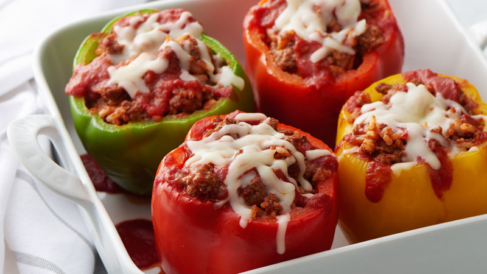

Stuffed Peppers

This recipe, Mexican Chicken-Stuffed Peppers, is taken from www.allrecipes.com and is perfect for any occasion. The seasoned chicken and melted cheese mixed with the sweet spice of bell pepper makes for a fantastic meal that everyone can enjoy.
Ingredients
- 1 pound extra-lean ground chicken
- 1 small onion, chopped
- 3 cloves garlic, minced
- 1 tablespoon chili powder
- 1 tablespoon ground cumin
- 4 each green peppers
- 1 (28 ounce) can diced tomatoes, undrained
- 1 (19 ounce) can black beans, rinsed
- 1 cup CRACKER BARREL Shredded Tex Mex Cheese
Steps
- Heat oven to 375 degrees F (190 degrees C).
- Cook chicken, onions, garlic and seasonings in large skillet on medium-high heat 7 to 9 minutes or until chicken is done, stirring occasionally.
- Cut tops off peppers; chop tops, then stir into chicken mixture along with the tomatoes and beans. Cook 5 to 6 minutes or until slightly thickened, stirring frequently. Meanwhile, remove cores and seeds from pepper shells; stand, fill sides up, in shallow pan.
- Spoon chicken mixture into peppers. Add enough water to pan to fill to 1/2-inch depth around peppers; cover.
- Bake 40 minutes. Carefully remove peppers from pan; drain water. Return peppers to pan. Top with cheese; bake 5 minutes or until melted.
Return To Home Page